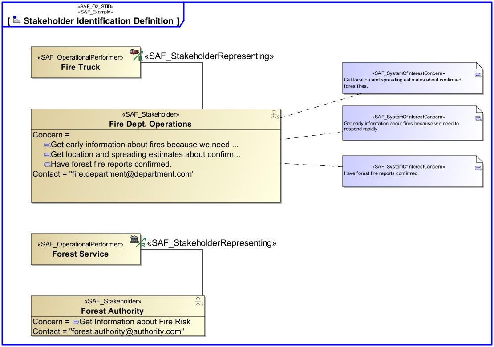
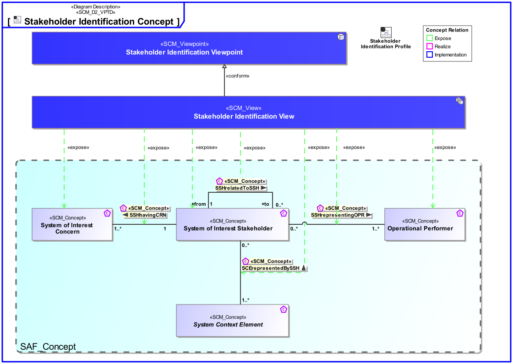
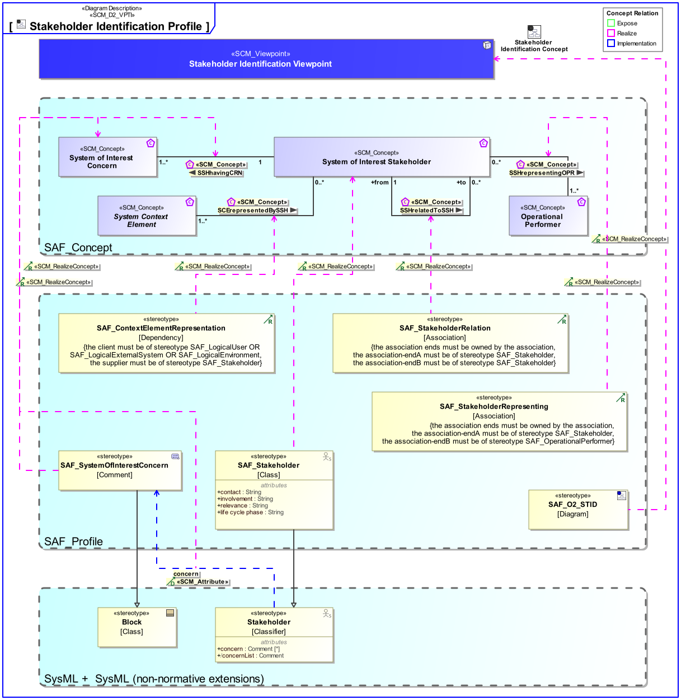

O2_STID Stakeholder Identification Viewpoint
| Domain | Aspect | Maturity |
|---|---|---|
| Operational | Taxonomy & Structure |

The Stakeholder Identification Viewpoint of the operational domain strives to identify Stakeholders, who’s concerns shall be considered, and adequatley adressed by the intended solution. Relations
The Stakeholder Identification Viewpoint supports the “Business or Mission Analysis Process” and the “Stakeholder Needs and Requirements Definition Process” activities of the INCOSE SYSTEMS ENGINEERING HANDBOOK 2023 [§2.3.5.1, §2.3.5.2] and contributes to the major Stakeholder identification.
A block definition diagram (BDD) depicting the identified, analysed, and classified Stakeholders, their interrelaions and their relations to the Intended Solution. Relations to represented Operational Performers shall also be shown.
The following Stereotypes / Model Elements are used in the Viewpoint:
The Diagram shows the concepts exposed by the viewpoint, and related concepts if necessary.

| Concept | Documentation |
|---|---|
| Operational Performer | An Operational Performer is an element of the Operational Context that is capable to perform Operational Process Activities contributing to a specific identified Operational Capability. An Operational Performer may be any kind of organization, person, or even a system playing a role in one or more Operational Contexts. Aliases: UAF::OperationalPerformer |
| SCErepresentedBySSH | Specifies the fact that a System Context Element is represented by a SOI Stakeholder. |
| SSHrepresentingOPR | Specifies the fact that a SOI Stakeholder is representing an Operational Performer. |
| SSHhavingCRN | Specifies the fact that a Stakeholder has certain Concerns. |
| SSHrelatedToSSH | Explains relations between the Stakeholders of the System and other relevant System parties. It helps to understand the Stakeholder community and to approach the right point of contact for clarification of project relevant issues. |
| System of Interest Concern | Any kind of interest a Stakeholder has. Note: Redundant with the meaning of "Need"? |
| System of Interest Stakeholder | An individual, team, or organization (or classes thereof) with interests in, or concerns relative to, a system. It may be involved in any life cycle phase of the System. The Stakeholder represents a class or kind of Stakeholders. Stakeholders have a certain involvement: Stakeholder Involvement captures the influence of a project specific Stakeholder on the System. Stakeholder Involvement is characterized by * Contact Person * Kind of involvement * Life Cycle Phases involved * Relevance decision if and up to which degree Stakeholder is considered * Rationale for decision when Stakeholder is not considered |
The Diagram shows the implementation of exposed concepts.
